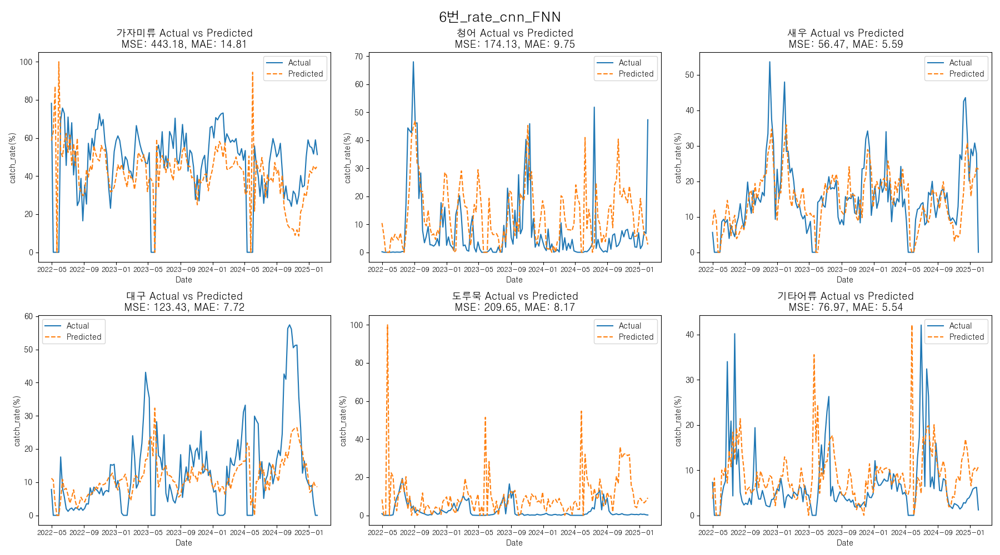
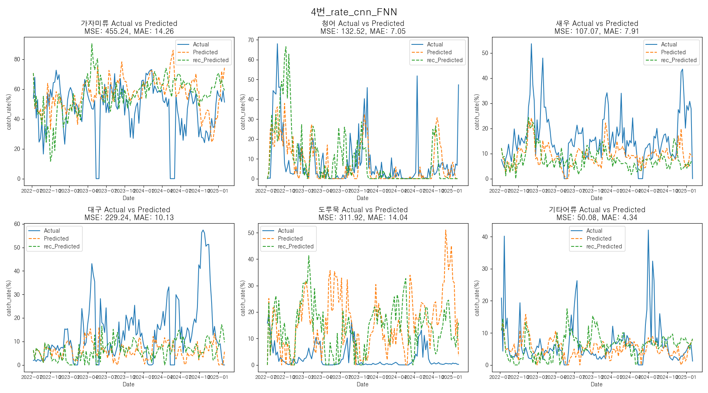
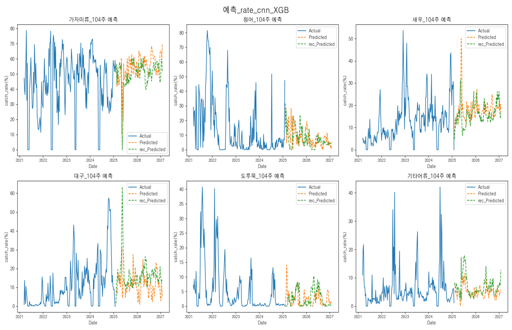

정국호
데이터 분석 & AI
- 🎂생년월일: 1999년 09월 14일 (만 25세)
- 📞 연락처: 010-4138-5728
- 📧 이메일: mrgjh13579@gmail.com
- 📍 주소: 부산광역시 사상구 주례로
- 🔗 Github: 여기로오세요~
- 🎖️ 병역: 육군 병장 만기 제대
(2019.03.04 - 2020.10.07)
해양 어획량 분석 프로젝트
프로젝트 주제
해양 기후 요소가 어획량에 미치는 영향을 파악하고 예측 모델을 구축
프로젝트의 어려움
1. 어획량 데이터의 심한 변동성으로 분석 신뢰도 확보 어려움. '어획률' 지표 변경 시도했으나 변동성 완전 해소는 어려움.
2. 데이터 복잡성으로 다양한 예측 모델 적용에도 RMSE/MAE 지표 높아 예측 정확도 현저히 낮음.
프로젝트 정보
- 프로젝트 일정 : 2025.04.30 ~ 2025.05.16
- 프로젝트 인원 : 4명
- 개인 기여도 : 70% (코드 작성, 로드맵작성, 가설검증)
- 관련 스킬 : 딥러닝, 머신러닝, 시계열
- 세부스킬 : seaborn, matplotlib, CNN, LSTM, XGB
데이터 접근
- 실제 위성 사진을 통한 예측
- 해양사이트에서 제공되어지는 위성 사진 내 수치데이터
- 기상청에서 제공되는 수치데이터
- 데이터 저장소
데이터 특정 전처리
- CNN을 통해 시계열 패턴 파악
- 도메인 기반 특성 선택
- PCA 기반 차원 축소
- 단계적 선택법을 통한 특성 선택
문제 (너무 낮은 성능)
실제 성능이 너무 낮은 문제를 보여줌, 어획량-> 어획률로 변경하였지만 지속적인 낮은 성능을 보여줌


해결 방법
1. 실제 어획량 및 어획률 데이터가 불안정해서 좋지 못한 성능을 보여 줌 ->
이유를 찾아보니 정책 및 인위적으로 어획에 변화를 주었음
해결 방법
2. 논문을 통해 데이터수가 파라미터 수보다 적으면 과적합 및 훈련이 불가능 할 수 있다고 판단
->ML모델(XGB,RF) 사용


최종 인사이트
- 해양 환경 변화가 실제 다양한 어류의 어획량 및 어획률에 큰 영향을 주지 못한다는 결론을 얻었습니다.
- 더 나아가, 복잡하고 현실적인 데이터 구조와 인위적인 개입(조업 및 정책) 등 예측하기 어려운 비선형적인 요인들이 많아 기계학습 모델만으로는 어획량을 예측하는 데 한계를 가진다는 최종 결론을 도출했습니다.